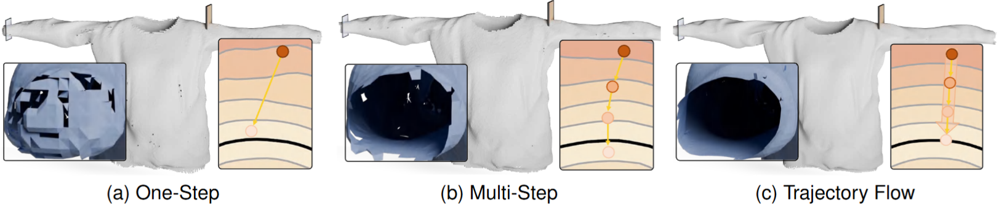
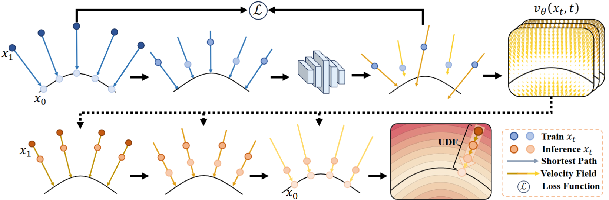
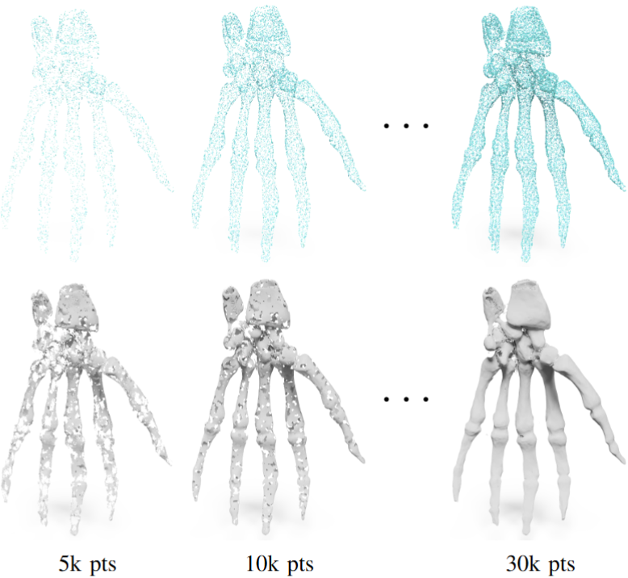
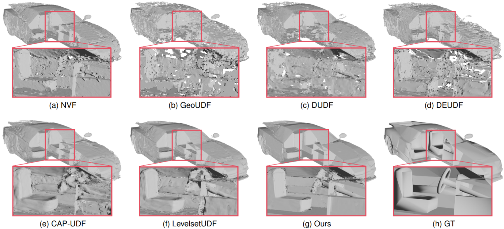

Abstract
Neural implicit methods reconstruct surfaces from point clouds by learning a continuous function, usually signed or unsigned distances. For unsigned distance field (UDF) reconstruction, many self-supervised methods estimate distance through local, gradient-guided displacement regression from query points to the surface. Because these corrections are local, they can become unstable near the zero level set and accumulate errors under sparse or non-uniform sampling. We address this limitation by reformulating UDF learning as a geometrically constrained trajectory-evolution problem, shifting from static local regression to global path-consistent modeling. We construct a bidirectional linear flow that promotes shortest-path trajectories between surface samples and query points. Under this formulation, distance prediction is interpreted as continuous state evolution along deterministic trajectories, preserving geometric consistency and mitigating local error accumulation. To address sparse and non-uniform sampling, we further introduce a flow-guided iterative densification strategy that progressively upgrades point-to-point approximations to accurate point-to-surface projections. Experiments on synthetic benchmarks and real-world scans demonstrate state-of-the-art reconstruction accuracy and robustness.
Method

Geometry-Constrained Transport. Linear reference trajectories connect each query point to its nearest surface sample, replacing unstable local displacement corrections with globally structured transport.
Flow Learning and Reverse Integration. A bidirectional, time-conditioned velocity field learns the transport dynamics and recovers projected surface points through reverse integration.

Iterative Densification. Flow-guided densification progressively refines coarse point-wise supervision into accurate point-to-surface correspondences.
Results

Citation
@article{yu2026trajectory,
title={Trajectory Flow: Geometry-Constrained Surface Reconstruction via Unsigned Distance Fields},
author={Yu, Chengcheng and Dun, Zixu and Liu, Zheng and He, Ying},
journal={IEEE Transactions on Visualization and Computer Graphics},
volume={32},
number={10},
pages={8397--8412},
year={2026},
doi={10.1109/TVCG.2026.3721433}
}